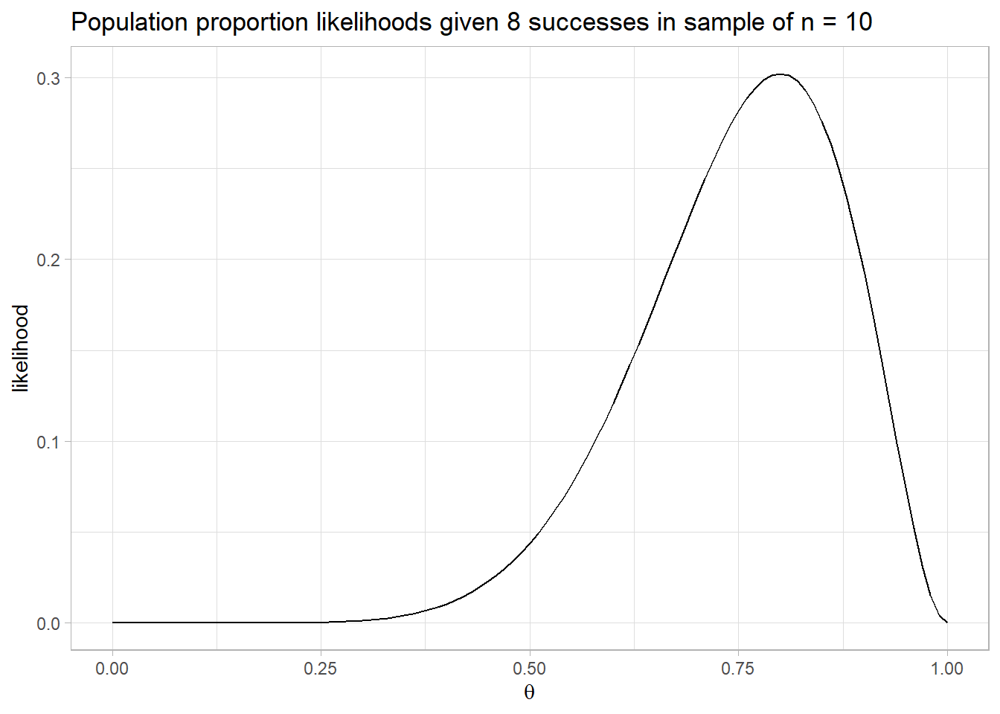
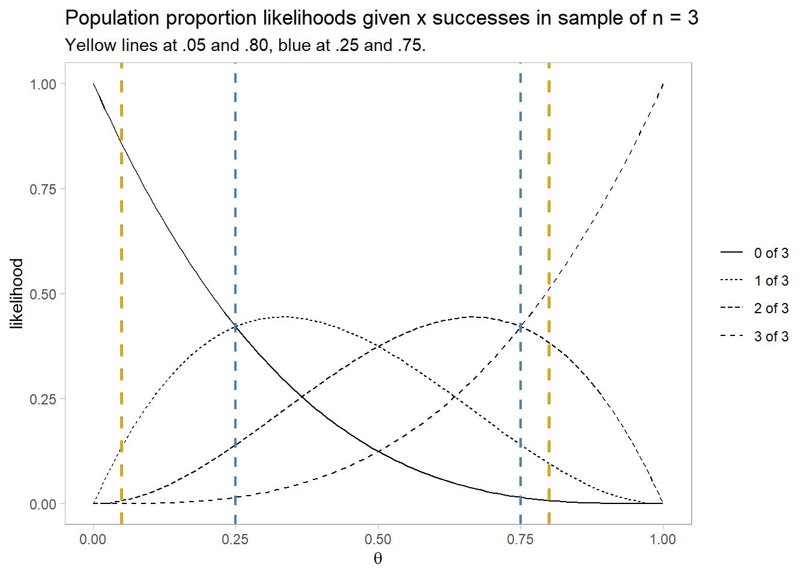

dbinom(8, 10, .5)[1] 0.04394531Likelihood functions are an approach to statistical inference (along with Frequentist and Bayesian). Likelihoods are functions of a data distribution parameter. For example, the binomial likelihood function is
\[L(\theta) = \frac{n!}{x!(n-x)!}\cdot \theta^x \cdot (1-\theta)^{n-x}\]
You can use the binomial likelihood function to assess the likelihoods of various hypothesized population probabilities, \(\theta\). Suppose you sample n = 10 coin flips and observe x = 8 successful events (heads) for an estimated heads probability of .8. The likelihood of a fair coin, \(\theta\) = .05 given the evidence is only 0.044.
dbinom(8, 10, .5)[1] 0.04394531You can see from the plot below that the likelihood function is maximized at \(\theta\) = 0.8 (likelihood = 0.302). The actual value of the likelihood is unimportant - it’s a density.

You can combine likelihood estimates by multiplying them. Suppose one experiment finds 4 of 10 heads and a second experiment finds 8 of 10 heads. You’d hope two experiments could be combined to achieve the same result as a single experiment with 12 of 20 heads, and that is indeed the case.
x <- dbinom(4, 10, seq(0, 1, .1))
y <- dbinom(8, 10, seq(0, 1, .1))
z <- dbinom(12, 20, seq(0, 1, .1))
round((x / max(x)) * (y / max(y)), 3)
## [1] 0.000 0.000 0.000 0.004 0.035 0.119 0.178 0.113 0.022 0.000 0.000
round(z, 3)
## [1] 0.000 0.000 0.000 0.004 0.035 0.120 0.180 0.114 0.022 0.000 0.000Compare competing estimates of \(\theta\) with the likelihood ratio. The likelihood of \(\theta\) = .8 vs \(\theta\) = .5 (fair coin) is \(\frac{L(\theta = 0.8)}{L(\theta = 0.5)}\) = 6.87.
A likelihood ratio of >= 8 is moderately strong evidence for an alternative hypothesis. A likelihood ratio of >= 32 is strong evidence for the alternative hypothesis. Keep in mind that likelihood ratios are relative evidence of H1 vs H0 - both hypotheses may be quite unlikely!
A set of studies usually include both positive and negative test results. You can see this from the likelihood plots below. These are the likelihood curves produced from x = [0..3] successes in a sample of 3. Think of this as the likelihood of [0..3] positive findings in 3 studies based on an \(\alpha\) = .05 level of significance and a .80 1 - \(\beta\) statistical power of the study.
The yellow line at .05 is the likelihood of a Type I error of concluding there is an effect when H1 is false. The yellow line at .80 is the likelihood of a Type II error of concluding there is no effect when H1 is true. The likelihood of 0 of 3 experiments reporting a positive effect under \(\alpha\) = .05, 1 - \(\beta\) = .80 is much higher under H0 (\(\theta\) = .05) than under H1 (\(\theta\) = .80): 0.857 vs 0.008 for a likelihood ratio of 107. The likelihood of 1 of 3 experiments reporting a positive effect is still higher under H0 than under H1: 0.135 vs 0.096 for a likelihood ratio of 1.41. For 2 of 3 experiments reporting a positive effect the likelihood ratio is 0.019, and for 3 of 3 experiments reporting a positive effect the likelihood ratio is 0.00024.

The blue lines demarcates the points where mixed results are as likely as unanimous results. A set of studies are likely to produce unanimous results only if the number of studies is fairly high \((\gt 1 - n / (n+1))\) or low \((< n / (n + 1))\).
Suppose a process \(T\) is the time to event of a process following an exponential probability distribution (notes), \(f(T = t; \lambda) = \lambda e^{-\lambda t}\). Fitting a model to the data means estimating the distribution’s parameter, \(\lambda\). The way this is typically done is by the process of maximum likelihood estimation (MLE). MLE compares the observed outcomes to those produced by the range of possible parameter values within the parameter space \(\lambda \in \Lambda\) and chooses the parameter value that maximizes the likelihood of producing the observed outcome, \(\hat{\lambda} = \underset{\lambda \in \Lambda}{\arg\max} \hat{L}_t(\lambda, t)\).
For the exponential distribution, the likelihood that \(\lambda\) produces the observed outcomes is the product of the probability densities for each observation because they are a sequence of independent variables.
\[\begin{eqnarray} L(\lambda; t_1, t_2, \dots, t_n) &=& f(t_1; \lambda) \cdot f(t_2; \lambda) \cdots f(t_n; \lambda) \\ &=& \Pi_{i=1}^n f(t_i; \lambda) \\ &=& \Pi_{i=1}^n \lambda e^{-\lambda t_i} \\ &=& \lambda^n \exp \left(-\lambda \sum_{i=1}^n t_i \right) \end{eqnarray}\]
That is difficult to optimize, but the log of it is simple.
\[l(\lambda; t_1, t_2, \dots, t_n) = n \ln(\lambda) - \lambda \sum_{i=1}^n t_i\]
Maximize the log-likelihood equation by setting its derivative to zero and solving for \(\lambda\).
\[\begin{eqnarray} \frac{d}{d \lambda} l(\lambda; t_1, t_2, \dots, t_n) &=& \frac{d}{d \lambda} \left( n \ln(\lambda) - \lambda \sum_{i=1}^n t_i \right) \\ 0 &=& \frac{n}{\lambda} - \sum_{i=1}^n t_i \\ \lambda &=& \frac{n}{\sum_{i=1}^n t_i} \end{eqnarray}\]
\(\lambda\) is the reciprocal of the sample mean.